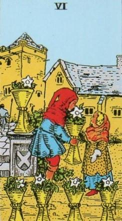
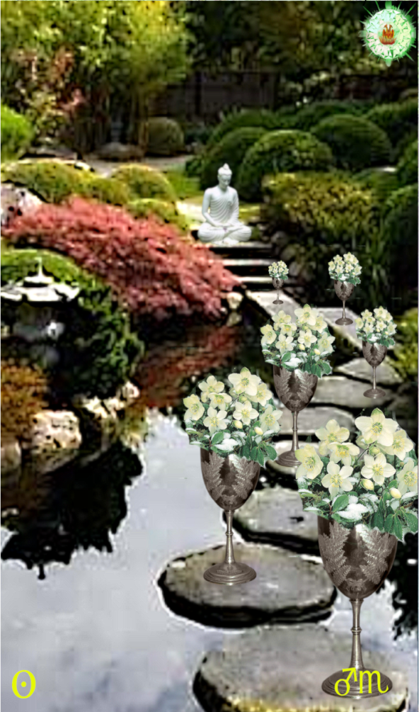
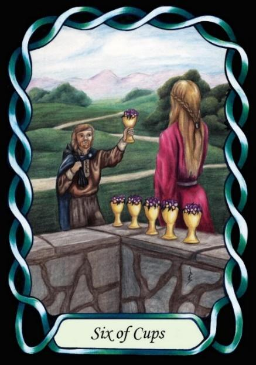

Six of Cups



Sign |
|
Eight: dark side |
|
Sign Ruler |
|
Element |
Water: emotions |
Modality |
|
Symbol |
Scorpion |
Decan |
|
Decan Ruler |
|
Time |
Nov 3 - 12 |
Depth Scorpio II
A Journeyman of the dark side. Being ruled by Mars and the Sun, see both the dark and light side. This tension results in a deep personality having an inherent understanding of polarities. It makes life difficult for the Journeyman, as every decision needs to resolve this difference before action can be taken. This is mentally exhausting, and requires quiet reflection time for recovery. It can also lead to confusion about the self, in terms of light and dark horses (See Chariot). Awareness of their own limitations can result in them undervaluing themselves.
Goldschneider Personology
These Scorpios are serious people, with a depth of character that is not always visible to others. However, they do have a strong need of contemplative retreat, and will typically arrange their home to provide this. If pressured or threatened in the short term, they may well strike like their scorpion sign.
RWS Imagery
In a protected garden, a serious child offers flowers to another, in an act signifying more depth than indicated by age. The scene is protected and peaceful. The flowers appear to be Hellebores, which symbolise serenity, tranquillity and peace. The garden represents Scorpio-twos' place of retreat. A St. Andrew’s cross is seen in the background, which is perhaps a reference to the “I’m not worthy” attitude of these people.
Summary
This card represents a profound understanding of light and darkness, polarities, and the human condition